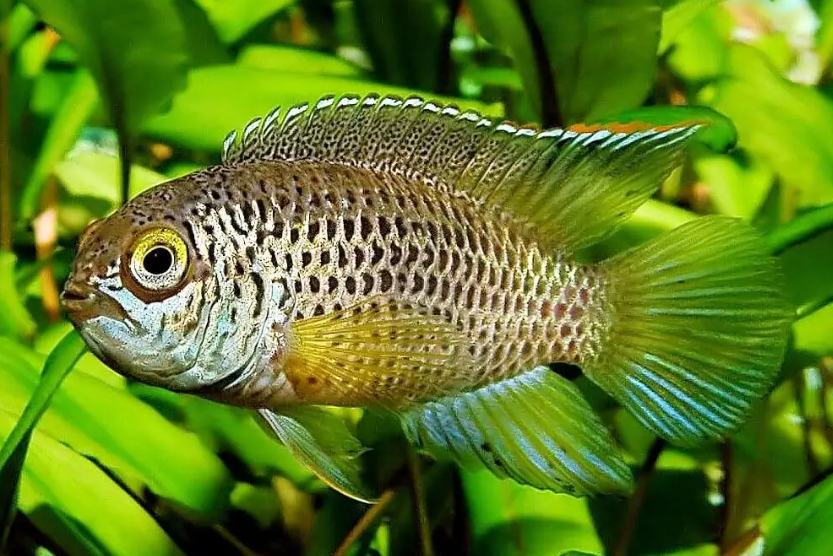
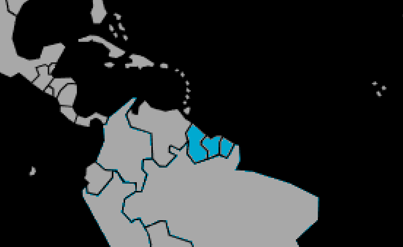

Systématique
- Ordre : Cichliformes
- Famille : Cichlidae
- Genre : Nannacara
- Espèce : N. anomala

Nannacara anomala, souvent appelé Cichlidé nain à œil d'or, est une espèce robuste originaire du nord de l'Amérique du Sud.
Il présente un fort dimorphisme sexuel, non seulement par la taille mais aussi par la couleur. Le mâle, qui atteint environ 8 cm, arbore une magnifique robe aux reflets métalliques verts, bleus et dorés. La femelle, plus petite (environ 4 à 5 cm), reste généralement beige ou jaunâtre avec une bande latérale sombre.
Sa caractéristique la plus frappante est la couleur de ses yeux : un iris doré très lumineux traversé par une barre noire, d'où son nom commun.
En temps normal, c'est un poisson relativement paisible qui vit en couple ou en harem (un mâle pour plusieurs femelles). Il occupe la partie inférieure de l'aquarium.
Cependant, le comportement change radicalement lors de la reproduction. La femelle devient extrêmement agressive pour protéger sa progéniture. Elle n'hésite pas à attaquer des poissons trois fois plus gros qu'elle et se retourne violemment contre le mâle, qu'elle peut tuer s'il ne peut pas se cacher ou fuir.
Mode : ovipare (pondeur sur substrat caché ou découvert).
La femelle dépose ses œufs dans une cachette (pot de fleur, noix de coco) ou sur une pierre plate abritée.
Dès la ponte, la femelle change de couleur : elle prend un motif en damier noir et jaune très contrasté. Elle chasse alors le mâle impitoyablement. En aquarium de volume moyen (< 100L), il est souvent nécessaire de retirer le mâle après la ponte pour sa propre survie.
Dimorphisme sexuel : Très marqué. Le mâle est plus grand, avec des nageoires dorsale et anale longues et effilées, et une couleur métallique bleutée/verte. La femelle est plus petite, plus ronde, aux nageoires plus courtes et aux teintes beiges/marron.
Espérance de vie : Environ 3 à 5 ans.
Il est originaire des plaines côtières du Guyana et du Suriname. Il fréquente les zones inondées, les criques de savane et les petits cours d'eau à courant lent, souvent encombrés de végétation.
Répartition

Origine naturelle :
- Amérique du Sud (Nord-Est).
- Guyana.
- Suriname.
- Guyane française (occasionnel).
Paramètres de maintenance
Température : 22 à 26 °C (assez tolérant).
pH : 6,0 à 7,5 (préfère l'eau légèrement acide mais s'adapte).
GH : 5 à 15 °dGH.
Volume conseillé : Minimum 60 à 80 L pour un couple. Le bac doit être très structuré avec de nombreuses cachettes visuelles (racines, plantes touffues) pour permettre au mâle de se soustraire à la vue de la femelle en cas de reproduction.
Régime alimentaire
Régime : carnivore à tendance omnivore.
Dans la nature, il chasse de petits invertébrés benthiques.
En aquarium, il accepte les granulés, mais préfère nettement la nourriture vivante ou congelée (vers de vase, daphnies, artémias), indispensable pour déclencher la reproduction et maintenir de belles couleurs.